Common Graphs¶
This page contains a bunch of graphs that we use in other chapters.
Lines¶
In this section, $a$ and $s$ can be any constants, and $s$ is the slope. In general, the equation of any non-vertical line is $y=sx+a$ where $s$ and $a$ can be 0, positive or negative. The slope of the $y=a$ line is 0 because $a=0x+a$.
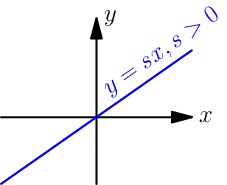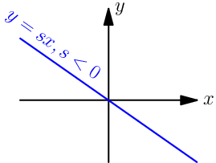 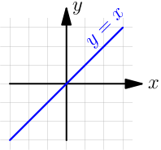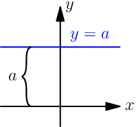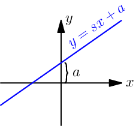Parabolas¶
Here $a$, $t$ and $u$ are constants. The graphs are drawn with $t>0$ and $u>0$ for simplicity, but $t$ and $u$ can be 0 or negative as well. For example, more $u$ seems to mean that the graph moves up, so e.g. $u=-2$ would bring the graph down.
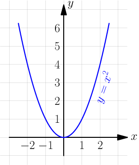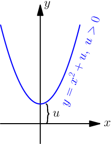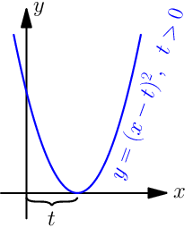 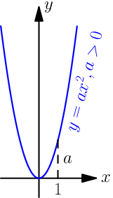
Handy thing: $(x-t)^2=x^2-2tx+t^2$
Proof:
$$\begin{align} & \ (x-t)^2 \\ =&\ (x-t)(x-t) \\ =&\ (x-t)x-(x-t)t \\ =&\ (xx-tx)-(xt-tt) \\ =&\ xx-tx-xt+tt \\ =&\ xx-(tx+tx)+tt \\ =&\ x^2-2tx+t^2 \end{align}$$The equations of all these parabolas seem to be of the form $y=a\cdot(x-t)^2+u$. Let's expand that a bit:
$$\begin{align} y &= a\cdot(x-t)^2+u \\ &= a\cdot(x^2-2tx+t^2)+u \\ &= ax^2-2atx+at^2+u \end{align}$$Now if we set $b=-2at$ and $c=at^2+u$, then $b$ and $c$ are also constants because they don't depend on the value of $x$. So we get this:
$$\begin{align} y = ax^2+bx+c \end{align}$$Equations of all parabolas that open up or down are like this. Note that $a \ne 0$ because $y=bx+c$ is a straight line.
Exponents and Logarithms¶
All of these graphs have an area where they get closer and closer to an axis but
they never touch it. For example, if $a>0$ then $a^x=0$ with no $x$, even though
$\displaystyle\lim_{x\to-\infty}a^x=0$ if $a>1$ and
$\displaystyle\lim_{x\to\infty}a^x=0$ if $0 There's a detailed introduction to exponents and logarithms here.
Sine and Cosine¶
See this thing if you don't know what $\tau$ and radians are, and this thing for a more detailed introduction to $\sin$, $\cos$ and the unit circle. Note that the graphs have a $t$ axis instead of an $x$ axis, and that $t$ is the same as the $t$ in the unit circle as radians.
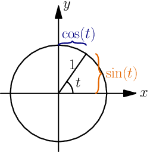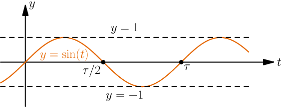
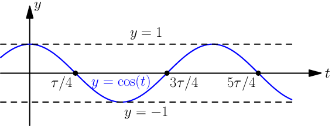